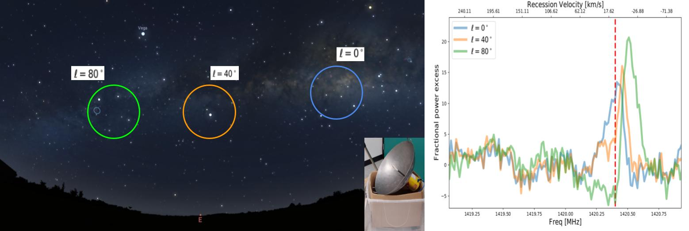

Milky way in the kitchen

Hong Kong was famous for its cyberprunk-ish night views - despite the neon lights are now replaced with LEDs. With this shinny environment, it is almost hopeless to do any stargrazing.
Actually not quite - the hilly landscape makes it possible - hike to remote area and use the hill to block most of the city light, like what my friend was doing. The humid climate in Hong Kong also makes the sky covered by clouds and fog throughout most of the year, so stargrazing in Hong Kong is a matter of both luck (with the weather) and hard-work.
Annoyed by the clouds and the fog, we decided to move to radio - at specific radio wavelengths, radio wave would not be effectively absorbed by water vapour, hence openning a window for astronomy. But it is impossible to see radio waves with naked eye, nor is it easy to buy a radio telescope off the shelf. Well...
With my friend, we designed a low-cost radio telescope constructed from kitchenware (+ some electronics).
Media Appearance
Address
Jockey Club Institute for Advanced Study,Hong Kong University of Science and Technology, Clear Water Bay,
Hong Kong